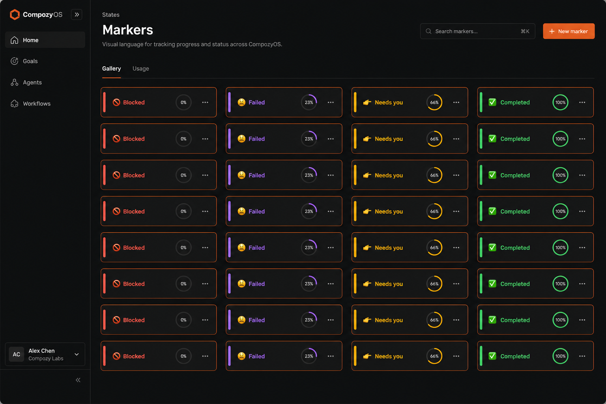

01
Bar placement
runtime · paperclip · ⏎ · spacer · sendAfter runtimeThe attach button is a sibling of the runtime chip, not a second primary. Click opens the OS picker via a hidden
input[type=file]. multiple is on. Accept is images plus PDF, Markdown, and text. Network /attach is a different product.02
After pick · one
original filename · persist starts immediatelyLandingThe OS dialog is not drawn. What the user sees next is the uploading tile, then ready. Send waits on persist.

03
After pick · many
multi-select lands as one scrolling rowFour at onceTwo screenshots, the spec, and the notes. Persist is per file — the PDF is still saving. This is the picker equivalent of the six-image composer, not a second grammar.

PDF
04
Not a slash command
/ stays skillsRejected path
/image and /attach would collide with the skill catalog. Network’s /attach is post-MVP and means “file, URL, capability ref” — a different product. Documented so it is not reintroduced.